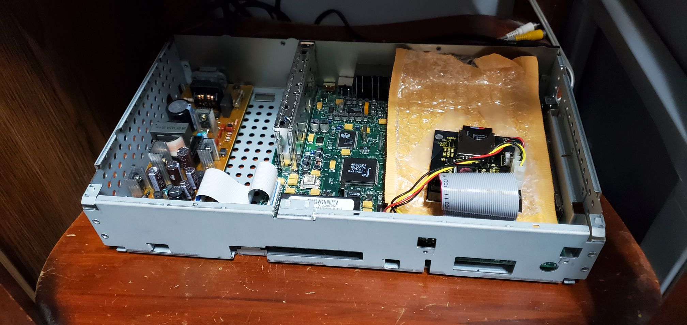
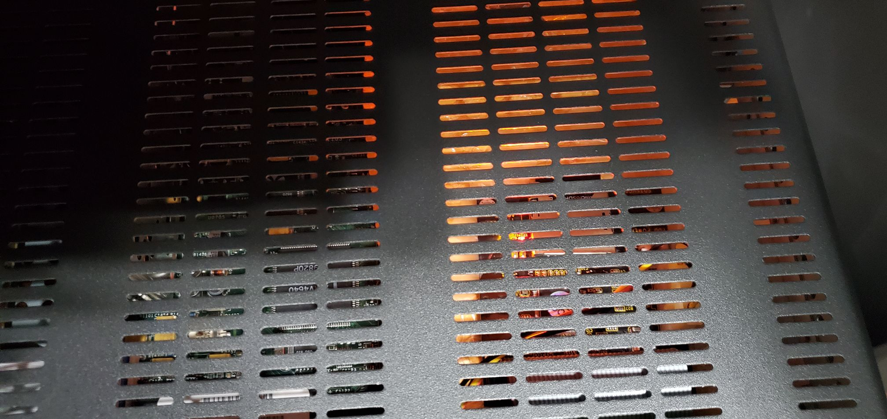

I recently got my hands on a Sony WebTV Plus. A few days ago I decided to flash mod it. Turns out that using an SD to IDE adapter is the wrong way of doing that. With my setup, the box is extremely slow. If your card is slow enough, it can actually cause Doom to lag. All of my class 4 cards seem to lag with Doom. I did have more success with a class 10 card though. Doom seems to lag a bit on the demo but is very playable. Loading RMF files off of the SD card seems to take a bit longer than on a hard drive as well. I had to remove the hard drive bracket in order for the adapter to fit into the case. Overall it's just a more sluggish experience. I do plan to try compact flash in the future and I'll update this page when I finally do check it out.
 